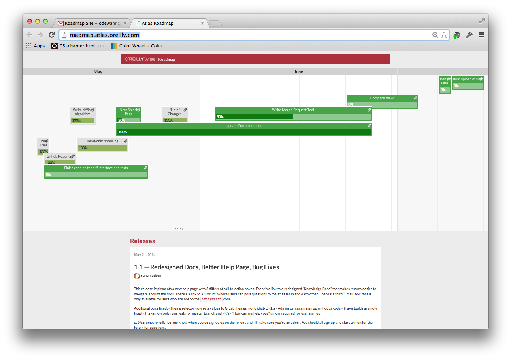

This project will follow the development and management process established for Atlas. Our goal is to provide as simple and transparent a path as we can for translating high level business requirements (represented in BRDs) into implementation tasks that meet those goals on the required schedule. The process consists of:
A product council to provide overall governance. The product council is a group of 5-8 stakeholders from editorial, product development, IT, online, and marketing that will guide the overall development of the project. The council will meet at a regular monthly time (i.e., first Thursday, second Wednesday, or whatever) to discuss new business requirements docs (BRDs).
A set of business requirement docs (BRDs) that describe various systems or features to be developed. Features will be developed only after their business value has been discussed, prioritized, and approved by the council. Anyone can submit a BRD, but only the council can approve it.
A set of functional specs. Once the high-level a BRD is approved, the next step is to develop a set of functional specs that will describe how the implementation team will meet the goals established in the BRD. The functional spec may include wireframes, code samples, documentation, prototypes, and other elements. The various elements in the functional spec will be checked into a GitHub repo, and discussion will happen via GitHub issues.
Roadmap tracking via GitHub. Once the functional spec is designed, the dev team will break the implementation into individual elements that can be scheduled on a roadmap. This schedule will be visible on an automated project dashboard that provides high-level visibility to the product council and other interested stakeholders, similar to the on used foe the Atlas Roadmap.

Once a BRD is approved and the functional specs laid out, the feature’s implementation can be tracked on an automated dashboard.
It is critical that this be an an iterative process. For example, functional specs may change many times as discovery happens, BRDs might be clarified, or the timing of critical BRD features might be affected by changes beyond the implementation team’s control (as in the example of the timing of the GitLab API). The key to success, however, is clarity around the decision making process and visibility into the current state of work.